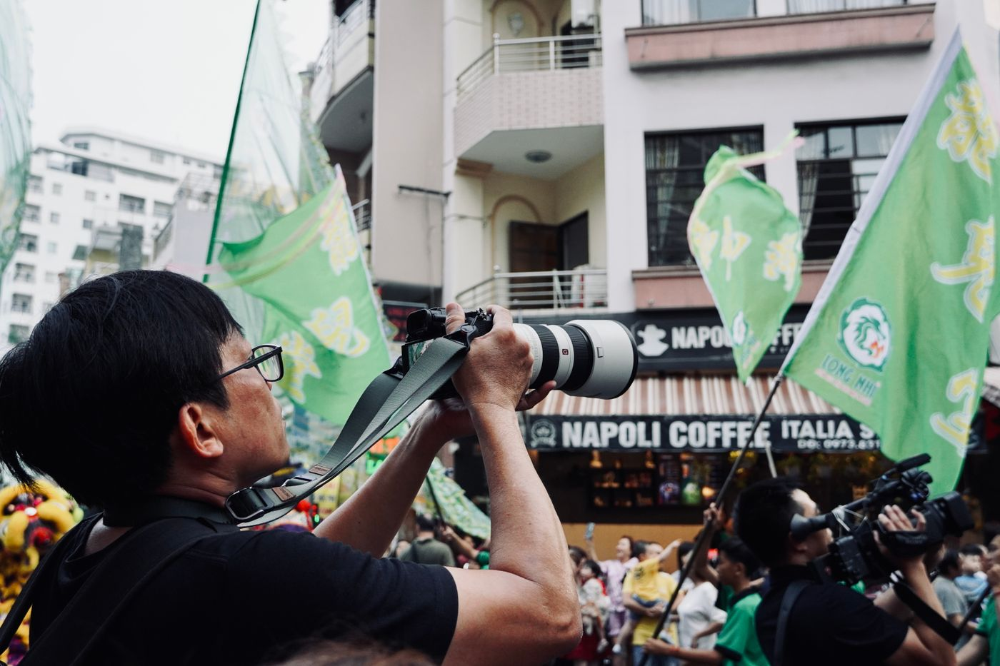

About — the block education
Nine seasons learning where to stand
The first season, I stood where the crowd was thickest, because that felt like the parade. I came home with four hundred photographs of the backs of other people's heads.
An uncle who had thrown from the same float for thirty years corrected me over coffee: the parade is not where the crowd is. The parade is where the light is, where the float slows, where the turn gives the riders a reason to look up. He drew me a map of St. Charles Avenue from memory — which corners the oaks shade by one o'clock, which block the sun clears the rooftops at four, where the ladders stand and where they never do.
That map is still the practice. It has been re-drawn every season since — new scaffolding, a felled oak, a route change — and it is walked, never just read: every booked parade gets a Friday recce on foot before its block plan is written. Nine seasons in, the education is mostly finished and entirely unfinished: the city keeps moving the light.
The opinion this site is built on, stated once: the best carnival photographs are 90% standing in the right place before anything happens. The remaining 10% is a camera. That is why the block plans are printed in the case files instead of kept as a trade secret — a client who can read the plan can hold the photographer to it.

The working page
How a booking runs
- 1 · Enquiry & route conversation
Krewe, date, route, what the photographs are for. If the date is gone, that is said in the first reply — never after a deposit.
- 2 · Friday route recce
The route walked on foot the Friday before: scaffolding, roadworks, oak shade, ladder rows, the blocks where the light will be at parade hour.
- 3 · Block plan sent before the fee is fixed
Positions by hour, with the light reasoning for each — the same document printed in the Parade Files. The confirmed fee is fixed in writing against this plan.
- 4 · Parade day — barricade discipline
The photographer stays behind the barricade at all times and never steps into the route, for any frame. Throws come at the camera; that is the job. Night parades add the flash discipline printed in File 02.
- 5 · Delivery windows
Proof gallery of 40 frames within 72 hours. Full edited gallery within 7 days as standard, or 48 hours with the rush line. Every delivered frame is captioned with parade, date and block position.
Crowd photographs — the basis, printed
People in the frame
Parades are public events on public streets, and crowd photographs are made and published on that editorial and street basis: the crowd is the story of a parade, and faces in it are photographed as part of the event, not singled out for ridicule or for advertising a product. Three working rules sit on top of that basis. Children are photographed as part of family groups in the crowd, never isolated and never named. Anyone who asks on the day — a word, a hand raised to the lens — is not photographed, and a frame already taken is deleted in front of them if they ask. And a client who wants an identifiable person used in advertising gets that person's written release first, arranged through the client; editorial coverage is not a stock library.
Engagement terms — as applied, not as decoration
The terms
- Booking & deposit
- A date is held on a 40% deposit against the written fee. The balance is due on delivery of the full gallery. A date is not held by a conversation, however warm.
- Rain & postponement
- If a parade is postponed by weather or by the city, the booking moves to the rescheduled date with 50% of the fee carried forward and no rebooking fee. Frames shot on the original day are delivered and count within the original booking. These terms were applied in full in File 03.
- Cancellation
- By the client: deposit returned in full up to 30 days before the parade; inside 30 days the deposit is held, because the date was. By the photographer (illness is the only reason ever given): full refund plus help finding a replacement, from a short list of photographers whose block plans are trusted.
- Image licensing
- The fee includes the krewe's or client's own use: programme, archive, social channels and press handouts, credited where the medium allows. Copyright stays with the photographer. Commercial licensing — advertising, merchandise, resale — is licensed separately in writing, per image, at rates quoted before use, never after.
- Delivery & archive
- Proof gallery 72 hours; full gallery 7 days standard, 48 hours on the rush line. Galleries are kept live for 12 months and the full-resolution archive is retained for five seasons; re-issue after that is free, just slow.
- Safety
- A working condition, not a term that can be negotiated away: the photographer works behind the barricade, does not step into the route, and stops shooting if a crowd surge moves the line. A booking cannot buy an exception.
Plan first, price second.
Send the krewe, the date and the route. The block plan comes back before any fee is confirmed — that order of business is the whole practice.